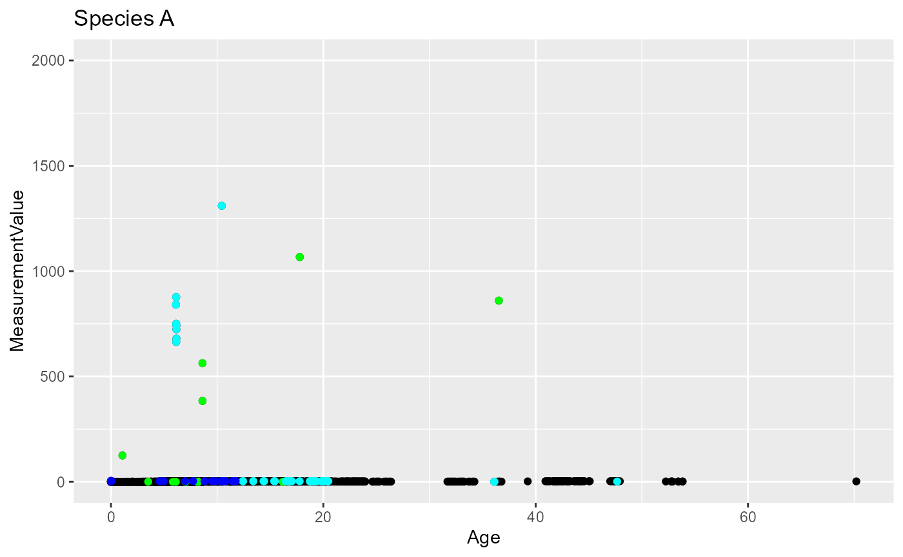
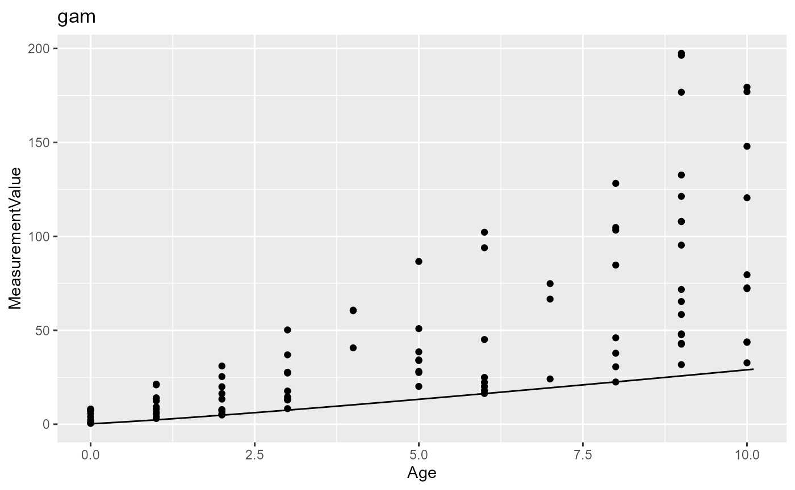

growth.Rmd
library(ISRverse)This function is the main function used to run the growth analysis for taxon profiles. It selects measures, removes outliers, selects the best growth model and produces the percentile of the best fitting growth model for the sexes and birth types selected. It takes as arguments:
data: the weight or length data from ZIMScoresubse: the core data of the species from ZIMSTaxa: the name of the taxa studiedSpecies: the name of the species studiedBirthType: “Captive”, “Wild”, and/or “All”AgeMat: age at sexual maturitymodels: indicating the growth models that need to be
fit.The following models are supported : logistic, gompertz,
chapmanRichards, vonBertalanffy, polynomialpercentiles: indicating the percentiles that need to be
estimated. default = c(2.5,97.5) corresponding to the 95% predicted
interval.MinInstitution Minimum number of institutions that
should hold records to run the analysis.MinNGro: Minimum number of weight needed to fit the
growth modelsMinNIGro: Minimum number of unique individuals needed
to fit the growth modelstype: Either ‘weight’ or ‘length’. Default =
’weightMeasureType: Name of the type of measurements that
should be included.MinDate: Earlier date to include dataPlotDir: Directory to save the plots showing outliers
and predictions from best modelsThe function returns a list including an analysis by sex and by birth type as included in the input. Each analysis includes: * The fit of the growth models with the AIC table of the model, the fit of the best model, a data frame with the percentile selected and 3 GOF test including the normality of residuals and the test of trend in residuals against X and in the variance of the residuals. * A summary with the number of individuals and weight used for the analysis: - NInd_raw and, NWeight_raw indicate the number of unique individuals and the number of weights once the sex, the birth type, the measurment type from global collection have been selected - NWeight_val and NInd_val indicate the number of unique individuals and the number of weights once valid measurment from Husbandry have been selected - NJuv= 0 and NAd indicate the number of weights of juveniles and adults selected - NJuv_keep= 0 and NAd_keep indicate the number of weights of juveniles and adults selected after removing outliers - NWeight and NInd indicate the total number of unique individuals and the number of weights used for the analysis - a logical indicated if the growth analysis was performed - If the growth analysis was not performed, an error and its number (Nerr) are returned: The possibility for this functions are: 1/No raw data and 2/No valid weight measure 3/Data from 1 Institution 4/ NWeight < MinNGro 5/NInd < MinNIGro 6/Best model did not fit.
data(weights)
data(core)
output= Gro_Main(data = weights, coresubse = core,
Taxa = "Reptilia", Species = "Testudo hermanni" ,
BirthType = c("Captive", "Wild"), AgeMat = 1,
type = "weight", MeasureType = "Live weight",
MinNGro = 30, MinNIGro = 30,
models = c("vonBertalanffy", "logistic"), percentiles = c(2.5,97.5))
#> Warning in Gro_remoutliers(., Taxa = Taxa, AgeMat = AgeMat, maxweight = NULL, :
#> Multiple measurment types found in the data: Live weight, Data should often
#> include only one Measurement Type
#> Warning in Gro_remoutliers(., Taxa = Taxa, AgeMat = AgeMat, maxweight = NULL, :
#> Multiple measurment types found in the data: Live weight, Data should often
#> include only one Measurement TypeThis function is used to prepare weight and length dataset. It unify the unity used, select clean measures and add individual age at each measure. This function takes as arguments:
data: the weight or length data from ZIMScoresubse: the core data of the species from ZIMSBirthType Captive, Wild, or All Default = “All”MinDate Earlier date to include data
(‘YYYY-MM-DD’)UncertDate Maximum uncertainty accepted for measurement
dates, in daysMeasureType Name of the type of measurement that should
be included. Default = NULL, all measurement type are included.type Either ‘weight’ or ‘length’.The function returns a list including: * The data frame including selected measures, plus individual birth date and individual age at each measure * A summary with the number of individuals and weight: - NInd_raw and, NWeight_raw indicate the number of unique individuals and the number of weights once the sex, the birth type, the measurment type from global collection have been selected - NWeight_val and NInd_val indicate the number of unique individuals and the number of weights once valid measurment from Husbandry have been selected - If no data are selected, an error and its number (Nerr) are returned: The possibility for this functions are: 1/No raw data and 2/No valid weight measure.
data(weights)
data(core)
data_weights= Gro_cleanmeasures(weights, core,
BirthType = "All",
MeasureType = 'Live weight',
MinDate = "1980-01-01")This function removes the outliers from a dataset of weights. This
function takes as arguments:
*data_weighta data frame that must include at least the columnsMeasurementValue,MeasurementType, andAge. *Taxathe name of the taxa studied *AgeMatthe MINIMUM age at sexual maturity. The function takes as threshold 1.2*AgeMat to differentiate juveniles (still growing) from adults *maxweight*variableidname of the column including individual IDs. Defaut = "AnimalAnonID". It must also be a column ofdata_weight*minqSensitivity of the function to remove outliers using percentiles, between 0 and 1. Default = 0.025 *IQRinfluences the sensitivity of the function to remove outliers using generalized additive model of growth. It should be above 1 Default = 2.75. A higher number makes the function less sensitive to find outliers. *perc_weight_minMinimum percentage of weight that an individual can naturally lose or gain during a year . Default = 0.2 (20%) *perc_weight_max`
Maximum percentage of weight that an individual can naturally lose or
gain during a year . Default = 2.5 (250%)
This function follow 4 different steps to highlight outliers: 1/ It
removes the measures higher than the argument maxweight
(Instead of using the OrdMag Fernando that was removing only very
extreme values, a maximum value was set for each taxa). In the default
case, default values are in kilograms and are set at 7000kg for
Mammalia, 200kg for Aves, 1500kg for Reptilia, 100kg for Amphibia,
1000kg for Chondrichthyes and 500kg for Osteichthyes. 2/ Independently
on adults and juveniles, it uses the function Gro_Rout_quan() to removes
outliers based on percentiles on adults and juveniles. It uses sliding
windows of age for juveniles. You can choose the number of intervals
used for the sliding windows using the argument
Ninterval_juv. 3/ Independently on adults and juveniles, it
uses the function Gro_lin_ind() to build generalized additive models for
each individual trajectories with at least min_Nmeasures
measures and remove outliers based on the residuals of the models. 4/ It
uses the function Gro_lin_ind() to build a common generalized additive
model for all growth trajectories and remove outliers based on the
residuals of the models.
The function returns the data frame including the column
KEEP a numeric vector of 1 and 0 indicating the measures to
keep. The 0 signal outliers. Other additional columns keep1, keep2,
keep3 indicates the individuals highlighted as outliers (0) in steps 1
to 3, and the column juv indicates which individuals have been
classified as juveniles.
data(weights)
weights = Gro_remoutliers(weights[weights$MeasurementType == "Live weight",],
Taxa = "Mammalia", AgeMat = 10)
#> Warning in Gro_remoutliers(weights[weights$MeasurementType == "Live weight", :
#> Multiple measurment types found in the data: Live weight, Data should often
#> include only one Measurement TypeThis functions removes all values lower and higher than the median value multiplied by how many times the (100-q)th percentile is higher than the qth percentile of the distribution of weights. This function does not remove the 2 youngest and 2 oldest individuals.
The measurement values must be positive
z = c(rnorm(100,5,1), runif(3,40,100))
x = rnorm(103,3,2)
Gro_Rout_quan (z,x, minq = 0.05)
#> [1] 1 1 1 1 1 1 1 1 1 1 1 1 1 1 1 1 1 1 1 1 1 1 1 1 1 1 1 1 1 1 1 1 1 1 1 1 1
#> [38] 1 1 1 1 1 1 1 1 1 1 1 1 1 1 1 1 1 1 1 1 1 1 1 1 1 1 1 1 1 1 1 1 1 1 1 1 1
#> [75] 1 1 1 1 1 1 1 1 1 1 1 1 1 1 1 1 1 1 1 1 1 1 1 1 1 1 0 1 0This function takes as arguments:
data_weight a data frame that must include at least the
columns MeasurementValue and Ageand
AnimalAnonID
perc_weight_min Minimum percentage of weight that an
individual can naturally lose or gain during a year. Default = 0.2
(20%)perc_weight_max Maximum percentage of weight that an
individual can naturally lose or gain during a year. Default = 2.5
(250%). This value is used only after 1 year oldIQR influences the sensitivity of the function to
remove outliers. It should be above 1 Default = 1.5. A higher number
makes the function less sensitive to find outliers.remove_ext Do you want to keep the two first and two
last observations of individual trajectories? These points may often be
highlighted as false outliers. Default = TRUEtraj_ind Do you want to build a model at the level of
the individual trajectory Default = TRUE. If yes, each individual
trajectory must have at least 5 measures.The function uses build generalized additive model of the measurement
value in relation to age. It flags as outliers all measures for which
the residuals from the linear model are above IQR * the inter quantile
interval (quantile(0.9) - quantile(0.1)) of the residuals.
perc_weight_min and perc_weight_max limit the
values that must be considered as outliers.
data(weights)
#We use only trajectories for which the number of individual datapoints is > 6
weights <- weights%>%
dplyr::group_by(AnimalAnonID)%>%
dplyr::mutate(nb= dplyr::n())%>%
dplyr::ungroup()%>%
dplyr::filter(nb >6)
weights_ind <- weights%>%Gro_lin_ind(traj_ind = TRUE)
as.numeric(weights_ind$Keep2)
#> [1] 0 0 0 1 0 0 0 0 0 0 0 0 0 0 0 0 0 0 0 0 0 0 0 0 0 0 0 0 0 0 0 0 0 0 0 0 0
#> [38] 0 0 0 0 0 0 0 0 0 0 0 0 0 0 0 1 1 1 0 0 0 1 0 0 0 0 0 0 0 0 0 0 0 0 0 0 0
#> [75] 0 0 0 0 0 0 0 0 0 0 0 0 0 0 0 0 0 0 0 0 0 0 0 0 0 0 0 0 0 0 0 0 0 0 0 0 0
#> [112] 0 0 0 0 0 0 0 0 0 1 1 0 0 0 0 1 0 1 0 0 0 0 0 0 0 0 0 0 0 0 0 0 0 0 0 0 0
#> [149] 0 0 0 0 0 0 0 0 0 0 0 0 0 0 0 0 0 0 0 0 0 0 0 0 0 0 0 0 0 0 0 0 0 0 0 0 0
#> [186] 0 0 0 0 0 0 0 0 0 0 0 0 0 0 0 0 0 0 0 1 0 1 0 1 1 0 0 0 0 0 0 0 0 0 0 0 0
#> [223] 0 0 0 0 0 0 0 1 1 0 0 1 1 0 0 1 0 0 0 0 0 0 0 0 0 0 0 0 0 0 0 0 0 0 0 0 0
#> [260] 0 0 0 0 0 0 0 0 0 0 0 0 0 0 0 0 0 0 0 0 0 0 0 0 0 0 0 1 1 1 1 1 0 0 0 0 0
#> [297] 0 0 0 1 0 0 0 0 0 0 0 0 0 0 0 0 0 0 0 1 0 0 0 0 0 0 0 0 0 0 0 0 0 0 0 0 0
#> [334] 0 0 0 0 0 0 0 0 0 0 0 0 0 0 0 0 0 0 0 0 0 0 0 0 0 0 0 0 0 0 0 0 0 0 0 0 0
#> [371] 0 0 0 0 0 0 0 0 0 0 0 0 0 0 0 0 0 0 0 0 0 0 1 1 1 1 1 0 0 0 0 0 0 0 0 0 0
#> [408] 0 0 0 0 0 0 0 0 0 0 0 0 0 0 0 0 0 0 0 0 0 0 0 0 0 0 0 0 0 0 0 0 0 0 0 0 0
#> [445] 0 0 0 0 0 0 0 0 0 0 0 0 0 0 0 0 0 0 0 0 0 0 0 0 0 0 0 0 0 0 0 0 0 0 0 0 0
#> [482] 0 0 0 0 0 0 0 0 0 0 0 0 0 0 0 0 0 0 0 0 0 0 0 0 0 0 0 0 0 0 0 0 0 0 0 0 0
#> [519] 0 0 0 0 0 0 0 0 0 0 0 0 0 0 0 0 0 1 1 1 0 0 0 0 0 0 0 0 0 0 0 0 0 0 0 0 0
#> [556] 0 0 0 0 0 0 0 0 0 0 0 0 0 0 0 0 0 0 0 0 0 0 0 0 0 0 0 0 0 0 0 0 0 0 0 0 0
#> [593] 0 0 0 0 0 0 0 0 0 0 0 0 0 0 0 0 0 0 0 0 0 0 0 0 0 0 0 0 0 0 0 0 0 0 0 0 0
#> [630] 0 0 0 0 0 0 0 0 1 1 1 1 1 1 0 1 0 0 0 0 0 1 1 1 1 1 1 0 0 0 0 0 0 0 0 0 0
#> [667] 0 0 0 0 0 0 0 0 0 0 0 0 0 0 0 0 0 0 0 0 1 1 1 1 1 1 1 0 0 0 0 0 0 0 0 0 0
#> [704] 0 0 0 0 0 0 0 0 0 0 0 0 0 0 0 0 0 0 0 0 0 0 0 0 0 0 0 0 0 0 0 0 0 0 0 0 0
#> [741] 0 0 0 0 0 0 0 0 0 0 0 0 0 0 0 0 0 0 0 1 1 1 0 0 0 0 1 1 1 1 0 0 0 0 0 0 0
#> [778] 0 0 0 0 0 0 0 0 0 0 0 0 0 0 0 0 0 0 0 0 1 1 0 0 0 0 0 0 0 0 0 0 0 0 0 0 0
#> [815] 0 0 0 0 0 0 0 0 0 0 0 0 0 0 0 0 0 0 0 0 0 0 0 0 0 0 0 0 0 0 0 0 0 0 0 0 0
#> [852] 0 0 0 0 0 0 0 0 0 0 0 0 0 0 0 0 0 0 0 0 0 0 0 0 0 0 0 0 0 0 0 0 0 0 0 0 0
#> [889] 0 0 0 0 0 0 0 0 0 0 0 0 0 0 0 0 0 0 0 0 0 0 0 0 0 0 0 0 0 0 0 0 0 0 0 0 0
#> [926] 0 0 0 0 0 0 0 0 0 0 0 0 0 0 0 0 0 0 0 0 0 0 0 0 0 0 0 0 0 0 0 0 0 0 0 0 0
#> [963] 0 0 0 0 0 0 0 0 0 0 0 0 0 0 0 0 0 0 0 0 0 0 0 0 0 0 0 0 0 0 0 0 0 0 0 0 0
#> [1000] 0 0 0 0 0 0 0 0 0 0 0 0 0 0 0 0 0 0 0 0 0 0 0 0 0 0 0 0 0 0 0 0 0 0 0 0 0
#> [1037] 0 0 0 0 0 0 0 0 0 0 0 0 0 0 0 0 0 0 0 0 0 0 0 0 0 0 0 0 0 0 0 0 0 0 0 0 0
#> [1074] 0 0 0 0 0 0 0 0 0 0 0 0 0 0 0 0 0 0 0 0 0 0 0 0 0 0 0 0 0 0 0 0 0 0 0 0 0
#> [1111] 0 0 0 0 0 0 0 0 0 0 0 0 0 0 0 0 0 0 0 0 0 0 0 0 0 0 0 0 0 0 0 0 0 0 0 0 0
#> [1148] 0 0 0 0 0 0 0 0 0 0 0 0 0 0 0 0 0 0 0 0 0 0 0 0 0 0 0 0 0 0 0 0 0 0 0 0 0
#> [1185] 0 0 0 0 0 0 0 0 0 0 0 0 0 0 0 0 0 0 0 0 0 0 0 0 0 0 0 0 0 0 0 0 0 0 0 0 0
#> [1222] 0 0 0 0 0 0 0 0 0 0 0 0 0 0 0 0 0 0 0 0 0 0 0 0 0 0 0 0 0 0 0 0 0 0 0 0 0
#> [1259] 0 0 0 0 0 0 0 0 0 0 0 0 0 0 0 0 0 0 0 0 0 0 0 0 0 0 0 0 0 0 0 0 0 0 0 0 0
#> [1296] 0 0 0 0 0 0 0 0 0 0 0 0 0 0 0 0 0 0 0 0 0 0 0 0 0 0 0 0 0 0 0 0 0 0 0 0 0
#> [1333] 0 0 0 0 0 0 0 0 0 0 0 0 0 0 0 0 0 0 0 0 0 0 0 0 0 0 0 0 0 0 0 0 0 0 0 0 0
#> [1370] 0 0 0 0 0 0 0 0 0 0 0 0 0 0 0 0 0 0 0 0 0 0 0 0 0 0 0 0 0 0 0 0 0 0 0 0 0
#> [1407] 0 0 0 0 0 0 0 0 0 0 0 0 0 0 0 0 0 0 0 0 0 0 0 0 0 0 0 0 0 0 0 0 0 0 0 0 0
#> [1444] 0 0 0 0 0 0 0 0 0 0 0 0 0 0 0 0 0 0 0 0 0 0 0 0 0 0 0 0 0 0 0 0 0 0 0 0 0
#> [1481] 0 0 0 0 0 0 0 0 0 0 0 0 0 0 0 0 0 0 0 0 0 0 0 0 0 0 0 0 0 0 0 0 0 0 0 0 0
#> [1518] 0 0 0 0 0 0 0 0 0 0 0 0 0 0 0 0 0 0 0 0 0 0 0 0 0 0 0 0 0 0 0 0 0 0 0 0 0
#> [1555] 0 0 0 0 0 0 0 0 0 0 0 0 0 0 0 0 0 0 0 0 0 0 0 0 0 0 0 0 0 0 0 0 0 0 0 0 0
#> [1592] 0 0 0 0 0 0 0 0 0 0 0 0 0 0 0 0 0 0 0 0 0 0 0 0 0 0 0 0 0 0 0 0 0 0 0 0 0
#> [1629] 0 0 0 0 0 0 0 0 0 0 0 0 0 0 0 0 0 0 0 0 0 0 0 0 0 0 0 0 0 0 0 0 0 0 0 0 0
#> [1666] 0 0 0 0 0 0 0 0 0 0 0 0 0 0 0 0 0 0 0 0 0 0 0 0 0 0 0 0 0 0 0 0 0 0 0 0 0
#> [1703] 0 0 0 0 0 0 0 0 0 0 0 0 0 0 0 0 0 0 0 0 0 0 0 0 0 0 0 0 0 0 0 0 0 0 0 0 0
#> [1740] 0 0 0 0 0 0 0 0 0 0 0 0 0 0 0 0 0 0 0 0 0 0 0 0 0 0 0 0 0 0 0 0 0 0 0 0 0
#> [1777] 0 0 0 0 0 0 0 0 0 0 0 0 0 0 0 0 0 0 0 0 0 0 0 0 0 0 0 0 0 0 0 0 0 0 0 0 0
#> [1814] 0 0 0 0 0 0 0 0 0 0 0 0 0 0 0 0 0 0 0 0 0 0 0 0 0 0 0 0 0 0 0 0 0 0 0 0 0
#> [1851] 0 0 0 0 0 0 0 0 0 0 0 0 0 0 0 0 0 0 0 0 0 0 0 0 0 0 0 0 0 0 0 0 0 0 0 0 0
#> [1888] 0 0 0 0 0 0 0 0 0 0 0 0 0 0 0 0 0 0 0 0 0 0 0 0 0 0 0 0 0 0 0 0 0 0 0 0 0
#> [1925] 0 0 0 0 0 0 0 0 0 0 0 0 0 0 0 0 0 0 0 0 0 0 0 0 0 0 0 0 0 0 0 0 0 0 0 0 0
#> [1962] 0 0 0 0 0 0 0 0 0 0 0 0 0 0 0 0 0 0 0 0 0 0 0 0 0 0 0 0 0 0 0 0 0 0 0 0 0
#> [1999] 0 0 0 0 0 0 0 0 0 0 0 0 0 0 0 0 0 0 0 0 0 0 0 0 0 0 0 0 0 0 0 0 0 0 0 0 0
#> [2036] 0 0 0 0 0 0 0 0 0 0 0 0 0 0 0 0 0 0 0 0 0 0 0 0 0 0 0 0 0 0 0 0 0 0 0 0 0
#> [2073] 0 0 0
weights_pop <- weights%>%Gro_lin_ind(traj_ind = FALSE)This function makes a plot higlighting the outliers found by Gro_remoutliers()). It takes as arguments:
The plot of the data points showed the outliers : * in red if detected using the maximum possible value * in green if detected using the inter quartile range * in cyan if detected using individual trajectories * in blue if detected from the global log-linear model
data(weights)
weights = Gro_remoutliers(weights[weights$MeasurementType == "Live weight",],
Taxa = "Reptilia", AgeMat = 10)
#> Warning in Gro_remoutliers(weights[weights$MeasurementType == "Live weight", :
#> Multiple measurment types found in the data: Live weight, Data should often
#> include only one Measurement Type
p <- Gro_outplot(data = weights,
title = "Species A", ylimit = c(0,2000))
p
This function fit a serie of growth models to a dataset, select the best one by AIC and estimates the percentiles of the predicted distribution of values. It takes as arguments:
Age <- sample(c(0:10), 100, replace = TRUE)
AnimalAnonID <- sample(c(0:20), 100, replace = TRUE)
MeasurementValue <- exp(0.2+15 * (1 - exp(-(0.1) * log(Age+1)))+
rnorm(100,0,0.01) + AnimalAnonID*0.1)-1
dat = data.frame(Age = Age, MeasurementValue = MeasurementValue,
AnimalAnonID = AnimalAnonID, MeasurementType = "Live Weight")
out = Gro_analysis(dat,
all_mods = c("logistic", "vonBertalanffy", "gam"),
percentiles = c(2.5, 97.5))This function fits a given growth model to a dataset. It takes as arguments:
data, a data frame including at least the numeric
columns logx and logz
model Name of the model to fit. The following models
are supported : logistic, gompertz, chapmanRichards, vonBertalanffy,
polynomial
logx <- rnorm(100, 0, 1)
logz <- 0.2+ 15 * (1 - exp(-(1) * logx)) +rnorm(100, 0, 0.01)
dat = data.frame(logx = logx, logz = logz,AnimalAnonID = sample(c(0:20), 100, replace = TRUE)
)
out <- Gro_fitlog(num = 1, data = dat, all_mods = "vonBertalanffy")This function gets the parameter and equations for the growth model and takes as arguments:
data, a data frame including at least the numeric
columns logx and logz
model Name of the model to fit. The following models
are supported : logistic, gompertz, chapmanRichards, vonBertalanffy,
polynomial
logx <- rnorm(100, 0, 1)
logz <- 0.2+ 15 * (1 - exp(-(1) * logx)) +rnorm(100, 0, 0.01)
dat = data.frame(logx = logx, logz = logz)
Gro_ModSettings(data = dat, model = "vonBertalanffy")
#> $growthMod
#> function(gamma = 0.5 , zinf = 0, z0 = 0, LL = F, logx, logz = 0) {
#> zEst <-z0 + zinf * (1 - exp(- gamma * logx))
#> if(LL){
#> return(sum((logz - zEst)^2))
#> }else{return(zEst)}
#> }
#> <bytecode: 0x00000146a333d160>
#> <environment: namespace:ISRverse>
#>
#> $np
#> [1] 3
#>
#> $namesCoef
#> [1] "z0" "zinf" "gamma"
#>
#> $low
#> [1] 0 0 0
#>
#> $gamstart
#> $gamstart$zinf
#> [1] 243.7833
#>
#> $gamstart$z0
#> [1] -229.4045
#>
#> $gamstart$gamma
#> [1] 1.005333This function makes a plot of the predicted percentiles from a growth model with data points. It takes as arguments:
Age <- sample(c(0:10), 100, replace = TRUE)
AnimalAnonID <- sample(c(0:20), 100, replace = TRUE)
MeasurementValue <- exp(0.2+15 * (1 - exp(-(0.1) * log(Age+1)))+
rnorm(100,0,0.01) + AnimalAnonID*0.1)-1
dat = data.frame(Age = Age, MeasurementValue = MeasurementValue,
AnimalAnonID = AnimalAnonID, MeasurementType = "Live Weight")
out = Gro_analysis(dat,
all_mods = c("logistic", "vonBertalanffy", "gam"),
percentiles = c(2.5, 97.5))
p <- Gro_plot(data = dat,
data_percent = out$percent,
title =out$AIC_tab$model[1])
p